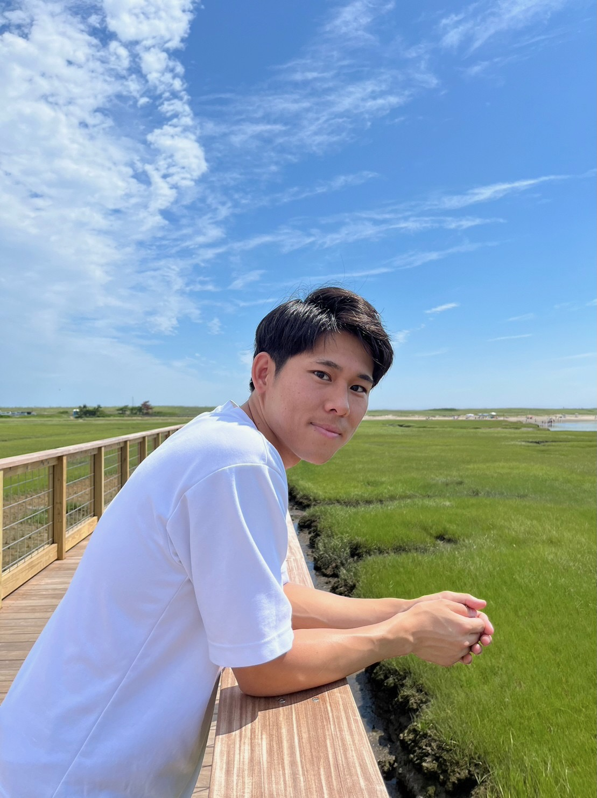
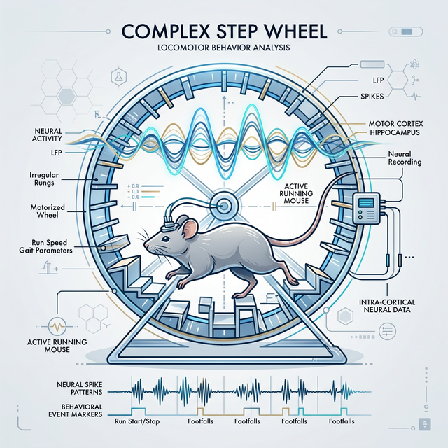
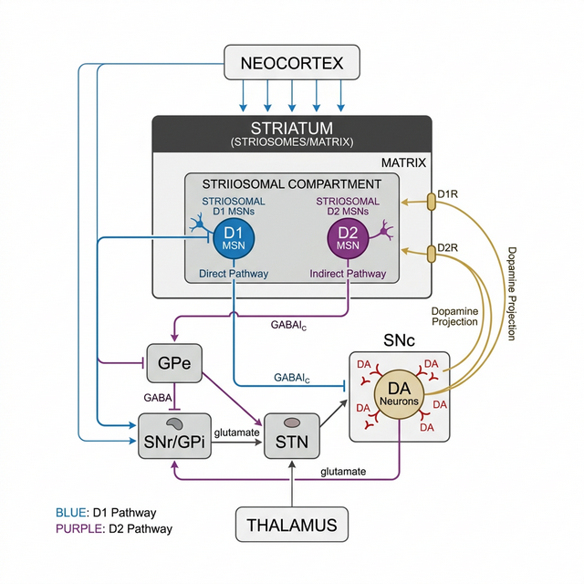
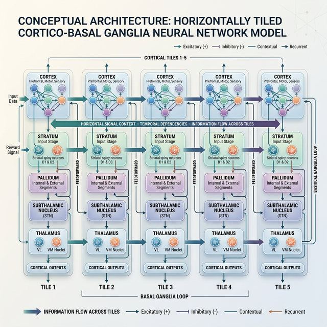
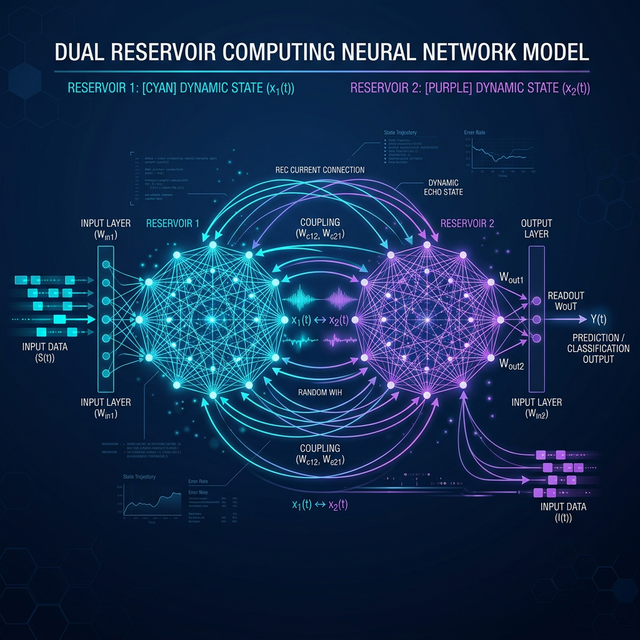
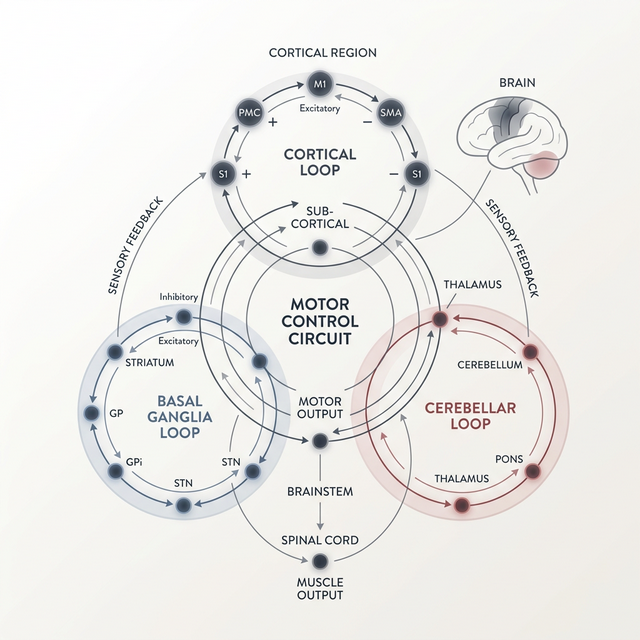

Kojiro Hirokane
Neuroscience Researcher @ MIT
Passionate about unravelling the complexities of the brain. My research focuses on the intersection of basal ganglia circuits, dopamine dynamics, and motor control behaviors.
Passionate about unravelling the complexities of the brain. My research focuses on the intersection of basal ganglia circuits, dopamine dynamics, and motor control behaviors.


Behavioral paradigm for mice executing complex and continuous movements. Demonstrated the emergence of rhythmic motor chunking and found representation of rhythmic parameters in the striatum.
Kojiro Hirokane et al., iScience, 2023
Kojiro Hirokane et al., Cell Reports, 2024

Identified parallel striosomal direct D1 and indirect D2 pathways targeting dopamine neurons, effectively expanding our understanding of basal ganglia function beyond the canonical direct-indirect pathway model.
Kojiro Hirokane et al., Current Biology, 2024

A novel reinforcement learning network model utilizing horizontally tiled cortico-basal ganglia modules. The architectural differences across pathways facilitate temporal-difference-error computations.
Kojiro Hirokane et al., bioRxiv, 2025

A dual reservoir computing framework modeling complex continuous dynamic patterns through two interconnected artificial neural network clusters.
View on GitHub ↗
Investigating neural loop alignments in motor control circuits, studying circular feedback processes that coordinate continuous behaviors and sensory-motor integration.
(Paper details forthcoming)